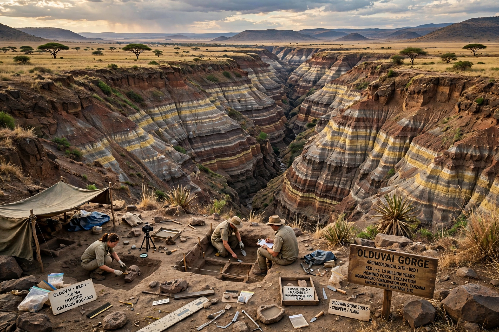

Olduvai Gorge, or Oldupai Gorge, is one of the most important paleoanthropological sites in the world. It is a steep-sided ravine in the Great Rift Valley of northern Tanzania, in the Ngorongoro Conservation Area, roughly 48 km (30 mi) long and 90 m deep. Over decades of excavation, the gorge yielded an unmatched sequence of stone tools and hominin fossils spanning nearly two million years, transforming understanding of human evolution.
| Olduvai Gorge | |
|---|---|
 Olduvai Gorge, Tanzania | |
| Location | Ngorongoro Conservation Area, Arusha Region, Tanzania |
| Coordinates | |
| Known for | Oldowan tools; Paranthropus boisei; Homo habilis |
| Excavators | Hans Reck; Louis and Mary Leakey |
German entomologist Wilhelm Kattwinkel noted the gorge in 1911, and geologist Hans Reck led the first expedition in 1913, recovering a human skeleton later judged intrusive. From 1931, Louis and Mary Leakey excavated systematically. In 1959 Mary Leakey discovered the robust australopithecine skull OH 5, "Zinj" (Paranthropus boisei), dated by the then-new potassium-argon method to about 1.75 million years — a result that dramatically extended the known antiquity of hominins. In 1960 the Leakeys' son Jonathan found remains of Homo habilis, the "handy man," proposed as the maker of the simplest stone tools.
The gorge's beds (I–IV, Masek, Ndutu, Naisiusiu) preserve successive lake-margin deposits. Bed I contains the Oldowan industry — the oldest widely recognised stone-tool tradition, named after the gorge — made of simple choppers and flakes. Above it appear Developed Oldowan and early Acheulean hand-axe assemblages. Fossils document multiple coexisting hominins (P. boisei, H. habilis, H. erectus) and a rich extinct fauna.
Olduvai — part of a UNESCO-protected conservation area and sometimes called the "Cradle of Mankind" — remains an active research site, with projects such as OGAP (Olduvai Geochronology and Archaeology Project) refining its chronology. A small museum at the gorge displays casts and artefacts.